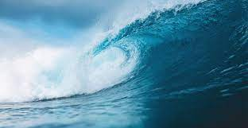

This page focuses on Links ad pages, mainly on links to outside sources, because the links to pages located on the website are already used for navigation.
Links can point to videos, pdfs, images and much more
Relative links are used for our navigation on this website, href should contain the file's path
The image src can be Relative and Absolute, like the href in links
The alt attribute describes the image, if it can't be loaded
The title attribute describes the picture, if we hover over it
